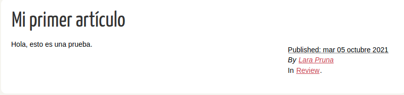

¿Te interesa crear tu propia web estática con Pelican en Debian?
Aquí aprenderás a hacerlo sin problemas. Como sabrás, Pelican es un generador de páginas estáticas basado en Python, y es bastante fácil de usar. Sigue con atención los siguientes pasos:
Primeros pasos en Pelican
Es muy recomendable que instalemos pelican en un entorno virtual, pues de lo contrario podría darnos problemas a la hora de desplegar el sitio. Por lo tanto, primero crearemos el entorno virtual, y después instalaremos el paquete con pip, y opcionalmente, con markdown. Si no tienes pip, puedes instalarlo como cualquier paquete de Debian:
apt install python3-pip
virtualenv ~/virtualenvs/pelican
cd ~/virtualenvs/pelican
source bin/activate
pip install "pelican[markdown]"
Genera tu sitio web:
pelican-quickstart
El programa te preguntará el nombre de tu nueva web, en qué directorio quieres guardarlo, nombre completo del creador, si quieres activar la paginación, etc.
 Ya tienes lo básico.
Ya tienes lo básico.
Ahora puedes probar a escribir un artículo. Tan solo tienes que crear un fichero en markdown o en el lenguaje que hayas elegido y guardarlo en el directorio "content". Veamos un ejemplo:
Title: Mi primer artículo
Date: 2021-10-05 9:10
Category: Review
lang: es
Hola, esto es una prueba.
Después, ejecuta el siguiente comando para guardar los cambios que hayas hecho en la carpeta:
pelican content
Es posible que, al generar el sitio web, no se haya creado automáticamente el directorio "images" dentro de la carpeta "content". En ese caso, al ejecutar el comando anterior saltará una alerta de tipo "Warning". Para solucionarlo, simplemente tendríamos que crear la carpeta a mano. Ya solo nos quedaría desplegar la previsualización en el navegador. Para ello, introducimos el comando:
pelican --listen
El programa nos devolverá una dirección http (http://localhost:8000). Copiamos dicha dirección en el navegador y ¡voila!

Para dejar de utilizar el entorno virtual, introducimos deactivate.
Configuración de Pelican
Dentro del fichero de configuración de Pelican, pelicanconf.py, se indicarán datos relativos al propietario del sitio web, el nombre, la URL, la zona horaria y el idioma.
AUTHOR = 'Lara Pruna'
SITENAME = 'SysRaider'
SITEURL = ''
PATH = 'content'
TIMEZONE = 'Europe/Paris'
DEFAULT_LANG = 'es'
Aunque no aparezcan por defecto, aquí también incluiremos la ruta de las páginas estáticas (imágenes y extras), así como la dirección del favicon.
STATIC_PATHS = ['images', 'extra']
EXTRA_PATH_METADATA = {'extra/favicon.ico': {'path':'favicon.ico'}}
También pondremos aquí el tema que vayamos a utilizar...
Pero eso lo veremos en la siguiente sección.
Finalmente, en la parte inferior del fichero podemos añadir todos los enlaces y redes sociales que queremos exponer en nuestra página. Además, tenemos la opción de habilitar o deshabilitar la paginación.
# Blogroll
LINKS = (('Pelican', 'https://getpelican.com/'),
('Python.org', 'https://www.python.org/'),
('Jinja2', 'https://palletsprojects.com/p/jinja/'),)
# Social widget
SOCIAL = (('LinkedIn', 'https://www.linkedin.com/in/lara-pruna-ternero-97887911b/'),
('GitHub', 'https://github.com/LaraPruna/'),)
DEFAULT_PAGINATION = False
Aplicación de una hoja de estilo
Pelican dispone de un repositorio en GitHub con todos los temas disponibles. Para instalar el tema, nos descargamos el que más nos guste con git clone y lo instalamos con pelican-themes:
mkdir themes && cd themes git clone https://github.com/gilsondev/pelican-clean-blog.git pelican-themes --install ./pelican-clean-blog
Al ejecutar el comando pelican-themes -l, ahora aparecerá el tema que acabamos de instalar:
lpruna@debian:~/github/web-estatica-pelican$ pelican-themes -l pelican-clean-blog notmyidea simple
A continuación, creamos un submódulo en el repositorio de GitHub, para que, a la hora de desplegar el sitio web, cargue también la hoja de estilo:
git submodule add https://github.com/gilsondev/pelican-clean-blog.git theme/pelican-clean-blog
Además, para que siempre se utlice esa hoja de estilo por defecto y no tengamos que especificarlo como parámetro, lo he metemos en el fichero de configuración (pelicanconf.py) de la siguiente forma:
THEME = 'theme/pelican-clean-blog'
Cuando volvamos a visualizar el sitio con pelican content y pelican --listen, veremos aplicado el tema en nuestra página.
Este sitio es un ejemplo de ello.